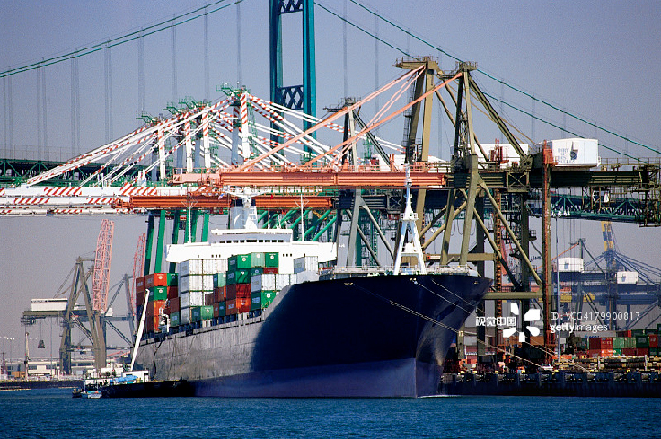

小型机械加工的生产类型是什么？2017-07-16
小型机械加工的生产类型是指企业生产专业化程度的分类。人们按照产品的生产纲领、投入生产的批量，可将小型机械加工生产分为单件生产、批量生产和大量生产三种类型。单件生产单个生产不同结构和尺寸的产品，很少重复甚至不重复，这种小型机械加工生产称为单件生产。如新产品试制、维修车间的配件制造和重型机械制造等都属此种生产类型。其特点是：生产的产品种类较多，而同一产品的产量很小，工作地点的加工对象经常改变。小型机械加工的生产类型是指企业生产专业化程度的分类。人们按照产品的生产纲领、投入产的批量，可将小型机械加工生产分为：单件生产、批量生产和大量生产三种类型。单件生产单个生产不同结构和尺寸的产品，很少重复甚至不重复，这种小型机械加工生产称为单件生产。如新产品试制、维修车间的配件制造和重型机械制造等都属此种生产类型。其特点是：生产的产品种类较多，而同一产品的产量很小，工作地点的加工对象经常改变。小型机械加工的生产类型是指企业生产专业化程度的分类。人们按照产品的生产纲领、投入生产的批量，可将小型机械加工生产分为：单件生产、批量生产和大量生产三种类型。单件生产单个生产不同结构和尺寸的产品，很少重复甚至不重复，这种小型机械加工生产称为单件生产。如新产品试制、维修车间的配件制造和重型机械制造等都属此种生产类型。其特点是：生产的产品种类较多，而同一产品的产量很小，工作地点的加工对象经常改变。小型机械加工的生产类型是指企业生产专业化程度的分类。人们按照产品的生产纲领、投入生产的批量，可将小型机械加工生产分为：单件生产、批量生产和大量生产三种类型。单件生产单个生产不同结构和尺寸的产品，很少重复甚至不重复，这种小型机械加工生产称为单件生产如新产品试制、维修车间的配件制造和重型机械制造等都属此种生产类型。其特点是：生产的产品种类较多，而同一产品的产量很小，工作地点的加工对象经常改变。
